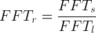

The Fast Fourier Transform is a fast method of converting time-domain audio data into frequency-domain values for the amount of each frequency that is present in the original signal. This implementation is taken from Corban Brook‘s dsp.js (thanks!).
Tuner.FFT = do ->Some important properties of the FFT are dependant on the size of the
input buffer and the sample rate of the signal, specifically:
The number of frequency bins that the data is split into - @bufferSize / 2
The width of the bins - @sampleRate / @bufferSize
class FFT
constructor: (@bufferSize, @sampleRate) ->The FFT constructor creates a whole bunch of containers for creating
the transformed frequency data.
@bandwidth = @sampleRate / @bufferSize
@spectrum = new Float32Array(@bufferSize / 2)
@real = new Float32Array(@bufferSize)
@imag = new Float32Array(@bufferSize)
@reverseTable = new Uint32Array(@bufferSize)
limit = 1
bit = bufferSize >> 1
while limit < bufferSize
[0...limit].forEach (i) =>
@reverseTable[i + limit] = @reverseTable[i] + bit
limit <<= 1
bit >>= 1It also generates the sin and cos values in advance.
@sinTable = new Float32Array(@bufferSize)
@cosTable = new Float32Array(@bufferSize)
[0...bufferSize].forEach (i) =>
@sinTable[i] = Math.sin(-Math.PI / i)
@cosTable[i] = Math.cos(-Math.PI / i)Each instance of the FFT class can take an ArrayBuffer containing
time-domain audio data and compute the Fourier transform of that data, giving
the frequency-domain components of the signal.
transform: (buffer) ->
bufferSize = @bufferSize
cosTable = @cosTable
sinTable = @sinTable
reverseTable = @reverseTable
real = @real
imag = @imag
spectrum = @spectrum
halfSize = 1
[0...bufferSize].forEach (i) ->
real[i] = buffer[reverseTable[i]]
imag[i] = 0
while halfSize < bufferSize
pSSR = cosTable[halfSize]
pSSI = sinTable[halfSize]
cPSR = 1
cPSI = 0
[0...halfSize].forEach (fftStep) ->
i = fftStep
while i < bufferSize
offset = i + halfSize
tr = (cPSR * real[offset]) - (cPSI * imag[offset])
ti = (cPSR * imag[offset]) + (cPSI * real[offset])
real[offset] = real[i] - tr
imag[offset] = imag[i] - ti
real[i] += tr
imag[i] += ti
i += halfSize << 1
tmpReal = cPSR
cPSR = (tmpReal * pSSR) - (cPSI * pSSI)
cPSI = (tmpReal * pSSI) + (cPSI * pSSR)
halfSize = halfSize << 1
this.calculateSpectrum()Once the time-domain data from the has been converted to frequency-domain
values calculateSpectrum takes the complex numbers and converts them
to real magnitudes for each frequency bin.
calculateSpectrum: ->
spectrum = @spectrum
real = @real
imag = @imag
bSi = 2 / @bufferSize
sqrt = Math.sqrt
[0...@bufferSize / 2].forEach (index) ->
r = real[index]
i = imag[index]
spectrum[index] = bSi * sqrt(r * r + i * i)The incoming audio from the microphone has a sample rate (FFTs) of
44100Hz. Since the highest pitch in the pitch to frequency mapping is ‘B7’
(3951.07Hz), data over roughly 8kHz can be ignored. The downsampled rate
that is used is 11025Hz (FFTs / 4). As the FFT requires a input of
length 2n, we use 8192 (213). The relationship between
FFT sample rate, FFT buffer length and FFT bin resolution, is:

An FFTs of 11025Hz and FFT buffer length of 8192 gives a bin
resolution of 1.3458Hz
new FFT(Tuner.Constants.FFTSIZE, Tuner.Constants.SAMPLE_RATE / 4)